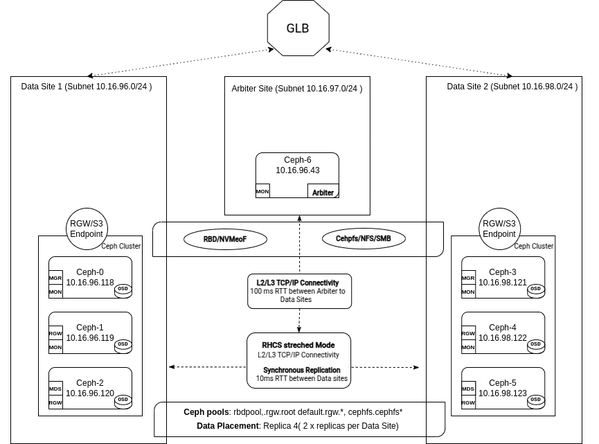

Ceph Stretch Clusters Part 2: Two Sites Plus Tiebreaker

Ceph Stretch Clusters Part 2: Two Sites Plus Tiebreaker ¶
Introduction ¶
In Part One we introduced the concepts behind Ceph’s replication strategies, emphasizing the benefits of a stretch cluster for achieving zero data loss (RPO=0). In Part Two we will focus on the practical steps for deploying a two-site stretch cluster plus a tie-breaker Monitor using cephadm.

Network Considerations. ¶
Network Architecture ¶
In a stretch architecture, the network plays a crucial role in maintaining the overall health and performance of the cluster.
Ceph features Level 3 routing, enabling communication among Ceph servers and components across subnets and CIDRs at each data center / site.
Ceph standalone or stretch clusters can be configured with two distinct networks:
- Public Network: Used for communication among all Ceph clients and services, including Monitors, OSDs, RGWs, and others
- Cluster Network: When provisioned (optional), the cluster aka replication aka back end aka private network is used only among OSDs for heartbeats, recovery, and replication, and thus need only be provisioned at the data sites where OSDs are located. More subtly this optional replication network need not have any default route (gateway) to your larger internetwork.
Public & Cluster Network Considerations ¶
The single public network must be accessible across all three sites, including the tie-breaker site, since all Ceph services rely on it.
The cluster network is only needed across the two sites that house OSDs and should not be configured at the tie-breaker site.
Network Reliability ¶
Unstable networking between the OSD sites will cause availability and performance issues in the cluster.
The network must not only be accessible 100% of the time but also provide consistent latency (low jitter).
Frequent spikes in latency can lead to unstable clusters, affecting client performance with issues including OSD flapping, loss of Monitor quorum, and slow (blocked) requests.
Latency Requirements ¶
A maximum 10ms RTT (network packet Round Trip Time) is tolerated between the data sites where OSDs are located.
Up to 100ms RTT is acceptable for the tie-breaker site, which can be deployed as a VM or at a loud provider if security policies allow.
If the tie-breaker node is in the cloud or on a remote network across a WAN it is recommended to:
Set up a VPN among the data sites and the tie-breaker site for the public network.
Enable encryption in transit using Ceph messenger v2 encryption, which secures communication among Monitors and other Ceph components.
Impact of Latency on Performance ¶
Every write operation in Ceph practices strong consistencyl. Written data must be persisted to all configured OSDs in the relevent placement group's acting set before success can be acknowledged to the client.
This adds at a minimum the network's RTT (Round Trip Time) between sites to the latency of every client write operation. Note that these replication writes (sub-ops) from the primary OSD to secondary OSDs happen in parallel.
[!info] For example, if the RTT between sites is 6 ms, every write operation will have at least 6 ms of additional latency due to replication between sites.
Throughput & Recovery Considerations ¶
The inter-site bandwidth (throughput) constrains:
- Maximum client throughput.
- Speed of recovery when an OSD, node, or site fails or subsequently becomes available again
When a node fails, 67% of recovery traffic will be remote, meaning it will read two thirds of data from OSDs at the other site, consuming the shared inter-site bandwidth alongside client IO.
Ceph designates a primary OSD for each placement group (PG). All client writes go through this primary OSD, which may reside in a different data center than the client or RGW instance.
Optimizing Reads with read_from_local_replica ¶
By default, all reads go through the primary OSD, which can increase cross-site latency.
The
read_from_local_replicafeature allows RGW and RBD clients to read from a replica at the same (local) site instead of always reading from the primary OSD, which has a 50% chance of being at the other site.This minimizes cross-site latency, reduces inter-site bandwidth usage, and improves performance for read-heavy workloads.
Available since Squid for both block (RBD) and object (RGW) storage. Local reads are not yet implemented for CephFS clients.
Hardware Requirements ¶
The hardware requirements and recommendations for stretch clusters are identical to those for traditional (standalone, non-stretch) deployments, with a few exceptions that will be discussed below.
Ceph in stretch mode recommends all-flash (SSD) configurations. HDD media are not recommended for any stretch Ceph cluster role. You have been warned.
Ceph in stretch mode requires replication with
size=4as the data replication policy. Erasure coding or replication with fewer copies is not supported. Plan accordingly for the raw and usable storage capacities that you must provision.Clusters with multiple device classes are not supported. A CRUSH rule containing
type replicated class hddwill not work. If any CRUSH rule specifies a device class (typicallyssdbut potentiallynvme) all CRUSH rules must specify that device class.Local-only non-stretch pools are not supported. That is, neither site may provision a pool that does not extend to the other site.
Component Placement ¶
Ceph services, including Monitors, OSDs, and RGWs, must be placed to eliminate single points of failure and ensure that the cluster can withstand the loss of an entire site without impacting client access to data.
Monitors: At least five Monitors are required, two per data site and one at the tie-breaker site. This strategy maintains quorum by ensuring that more than 50% of the Monitors are available even when an entire site is offline.
Manager: We can configure two or four Managers per data site. Four managers are recommended to provide high availability with an active/passive pair at a surviving site in case of a data site failure.
OSDs: Distributed equally across data sites. Custom CRUSH rules must be created when configuring stretch mode, placing two copies at each site, four total for a two-site stretch cluster.
RGWs: Four RGW instances, two per data site, are recommended at minimum to ensure high availability for object storage from the remaining site in case of a site failure.
MDS: The minimum recommended number of CephFS Metadata Server instances is four, two per data site. In the case of a site failure, we will still have two MDS services at the remaining site, one active and the other acting as a standby.
NFS: Four NFS server instances, two per data site, are recommended at minimum to ensure high availability for the shared filesystem when a site goes offline.
Hands-on: Two Data Center Stretch Mode Deployment. ¶
During the cluster bootstrap process with the cephadm deployment tool we can utilize a service definition YAML file to handle most cluster configuration in a single step.
The below stretched.yaml file provides an example template for deploying a Ceph cluster configured in stretch mode. This is just an example and must be customized to fit your specific deployment's details and needs.
service_type: host
addr: ceph-node-00.cephlab.com
hostname: ceph-node-00
labels:
- mon
- osd
- rgw
- mds
location:
root: default
datacenter: DC1
---
service_type: host
addr: ceph-node-01.cephlab.com
hostname: ceph-node-01
labels:
- mon
- mgr
- osd
- mds
location:
root: default
datacenter: DC1
---
service_type: host
addr: ceph-node-02.cephlab.com
hostname: ceph-node-02
labels:
- osd
- rgw
location:
root: default
datacenter: DC1
---
service_type: host
addr: ceph-node-03.cephlab.com
hostname: ceph-node-03
labels:
- mon
- osd
location:
root: default
datacenter: DC2
---
service_type: host
addr: ceph-node-04.cephlab.com
hostname: ceph-node-04
labels:
- mon
- mgr
- osd
- mds
location:
root: default
datacenter: DC2
---
service_type: host
addr: ceph-node-05.cephlab.com
hostname: ceph-node-05
labels:
- osd
- rgw
- mds
location:
root: default
datacenter: DC2
---
service_type: host
addr: ceph-node-06.cephlab.com
hostname: ceph-node-06
labels:
- mon
---
service_type: mon
service_name: mon
placement:
label: mon
spec:
crush_locations:
ceph-node-00:
- datacenter=DC1
ceph-node-01:
- datacenter=DC1
ceph-node-03:
- datacenter=DC2
ceph-node-04:
- datacenter=DC2
ceph-node-06:
- datacenter=DC3
---
service_type: mgr
service_name: mgr
placement:
label: mgr
---
service_type: mds
service_id: cephfs
placement:
label: "mds"
---
service_type: osd
service_id: all-available-devices
service_name: osd.all-available-devices
spec:
data_devices:
all: true
placement:
label: "osd"
With the specification file customized for your deployment, run the cephadm bootstrap command. Note that we pass the YAML specification file with --apply-spec stretched.yml so that all services are deployed and configured in one step.
# cephadm bootstrap --registry-json login.json --dashboard-password-noupdate --mon-ip 192.168.122.12 --apply-spec stretched.yml --allow-fqdn-hostname
Once complete, verify that the cluster recognizes all hosts and their appropiate labels:
# ceph orch host ls
HOST ADDR LABELS STATUS
ceph-node-00 192.168.122.12 _admin,mon,osd,rgw,mds
ceph-node-01 192.168.122.179 mon,mgr,osd
ceph-node-02 192.168.122.94 osd,rgw,mds
ceph-node-03 192.168.122.180 mon,osd,mds
ceph-node-04 192.168.122.138 mon,mgr,osd
ceph-node-05 192.168.122.175 osd,rgw,mds
ceph-node-06 192.168.122.214 mon
Add the _admin label to at least one node in each datacenter so that you can run Ceph CLI commands. This way, even if you lose an entire datacenter, you can execute Ceph admin commands from a surviving host. It is not uncommon to assign the _admin label to all cluster nodes.
# ceph orch host label add ceph-node-03 _admin
Added label _admin to host ceph-node-03
# ceph orch host label add ceph-node-06 _admin
Added label _admin to host ceph-node-06
# ssh ceph-node-03 ls /etc/ceph
ceph.client.admin.keyring
ceph.conf
Hands-on: How does Ceph write two copies of the data per site? ¶
Ceph, when configured in stretch mode, requires all pools to use the replication data protection strategy with size=4. This means two copies of data at each site, ensuring availability when an entire site goes down.
Ceph uses the CRUSH map to determine where place data replicas. The CRUSH map logically represents the physical hardware layout, organized in a hierarchy of bucket types that include datacenters, rooms, and most often racks, and hosts. To configure a stretch mode CRUSH map, we define two datacenters under the default CRUSH root, then place the host buckets within the appropriate datacenter CRUSH bucket.
The following example shows a stretch mode CRUSH map featuring two datacenters, DC1 and DC2, each with three Ceph OSD hosts. We get this topology right out of the box, thanks to the spec file we used during bootstrap, where we specify the location of each host in the CRUSH map.
# ceph osd tree
ID CLASS WEIGHT TYPE NAME STATUS REWEIGHT PRI-AFF
-1 0.58557 root default
-3 0.29279 datacenter DC1
-2 0.09760 host ceph-node-00
0 hdd 0.04880 osd.0 up 1.00000 1.00000
1 hdd 0.04880 osd.1 up 1.00000 1.00000
-4 0.09760 host ceph-node-01
3 hdd 0.04880 osd.3 up 1.00000 1.00000
7 hdd 0.04880 osd.7 up 1.00000 1.00000
-5 0.09760 host ceph-node-02
2 hdd 0.04880 osd.2 up 1.00000 1.00000
5 hdd 0.04880 osd.5 up 1.00000 1.00000
-7 0.29279 datacenter DC2
-6 0.09760 host ceph-node-03
4 hdd 0.04880 osd.4 up 1.00000 1.00000
6 hdd 0.04880 osd.6 up 1.00000 1.00000
-8 0.09760 host ceph-node-04
10 hdd 0.04880 osd.10 up 1.00000 1.00000
11 hdd 0.04880 osd.11 up 1.00000 1.00000
-9 0.09760 host ceph-node-05
8 hdd 0.04880 osd.8 up 1.00000 1.00000
9 hdd 0.04880 osd.9 up 1.00000 1.00000
Here, we have two datacenters, DC1 and DC2. A third datacenter DC3 houses the tie-breaker monitor on ceph-node-06 but does not host OSDs.
To achieve our goal of having two copies per site, we define a stretched CRUSH rule to assign to our Ceph RADOS pools.
- Install the
ceph-basepackage to get thecrushtoolbinary, here demonstrated on a RHEL system.
# dnf -y install ceph-base
- Export the CRUSH map to a binary file
# ceph osd getcrushmap > crush.map.bin
- Decompile the CRUSH map to a text file
# crushtool -d crush.map.bin -o crush.map.txt
- Edit the
crush.map.txtfile to add a new rule at the end of the file, taking care that the numeric ruleidattribute must be unique:
rule stretch_rule {
id 1
type replicated
step take default
step choose firstn 0 type datacenter
step chooseleaf firstn 2 type host
step emit
}

- Inject the augmented CRUSH map to make the rule available to the cluster:
# crushtool -c crush.map.txt -o crush2.map.bin
# ceph osd setcrushmap -i crush2.map.bin
- Validate that the new rule is available:
# ceph osd crush rule ls
replicated_rule
stretch_rule
Hands-on: Configure Monitors for Stretch Mode ¶
Thanks to our bootstrap spec file, the Monitors are labeled according to the data center to which they belong. This labeling ensures Ceph can maintain quorum even if one data center experiences an outage. In such cases, the tie-breaker Monitor in DC 3 acts in concert with the Monitors an the surviving data site to maintain the cluster's Monitor quorum.
# ceph mon dump | grep location
0: [v2:192.168.122.12:3300/0,v1:192.168.122.12:6789/0] mon.ceph-node-00; crush_location {datacenter=DC1}
1: [v2:192.168.122.214:3300/0,v1:192.168.122.214:6789/0] mon.ceph-node-06; crush_location {datacenter=DC3}
2: [v2:192.168.122.138:3300/0,v1:192.168.122.138:6789/0] mon.ceph-node-04; crush_location {datacenter=DC2}
3: [v2:192.168.122.180:3300/0,v1:192.168.122.180:6789/0] mon.ceph-node-03; crush_location {datacenter=DC2}
4: [v2:192.168.122.179:3300/0,v1:192.168.122.179:6789/0] mon.ceph-node-01; crush_location {datacenter=DC1}
When running a stretch cluster with three sites, only communication between one site and a second is affected when we have an asymmetrical network error. This can result in an unresolvable Monitor election storm, where no Monitor can be selected as the leader.

To avoid this problem, we will change our election strategy from the classic approach to a connectivity-based one. The connectivity mode assesses the connection scores each Monitor provides for its peers and elects the Monitor with the highest score. This model is specifically designed to handle network partitioning aka a netsplit. Network partitioning may occur when your cluster is spread across multiple data centers, and all links connecting one site to another are lost.
# ceph mon dump | grep election
election_strategy: 1
# ceph mon set election_strategy connectivity
# ceph mon dump | grep election
election_strategy: 3
You can check monitor scores with a command of the following form:
# ceph daemon mon.{name} connection scores dump
To learn more about the Monitor connectivity election strategy, check out this excellent video from Greg Farnum. Further information is also available here.
Hands-on: Enabling Ceph Stretch Mode ¶
To enter stretch mode, run the following command:
# ceph mon enable_stretch_mode ceph-node-06 stretch_rule datacenter
Where:
ceph-node-06 is the tiebreaker (arbiter) monitor in DC3.
stretch_rule is the CRUSH rule that enforces two copies in each data center.
datacenter is our failure domain
Check the updated MON configuration:
# ceph mon dump
epoch 20
fsid 90441880-e868-11ef-b468-52540016bbfa
last_changed 2025-02-11T14:44:10.163933+0000
created 2025-02-11T11:08:51.178952+0000
min_mon_release 19 (squid)
election_strategy: 3
stretch_mode_enabled 1
tiebreaker_mon ceph-node-06
disallowed_leaders ceph-node-06
0: [v2:192.168.122.12:3300/0,v1:192.168.122.12:6789/0] mon.ceph-node-00; crush_location {datacenter=DC1}
1: [v2:192.168.122.214:3300/0,v1:192.168.122.214:6789/0] mon.ceph-node-06; crush_location {datacenter=DC3}
2: [v2:192.168.122.138:3300/0,v1:192.168.122.138:6789/0] mon.ceph-node-04; crush_location {datacenter=DC2}
3: [v2:192.168.122.180:3300/0,v1:192.168.122.180:6789/0] mon.ceph-node-03; crush_location {datacenter=DC2}
4: [v2:192.168.122.179:3300/0,v1:192.168.122.179:6789/0] mon.ceph-node-01; crush_location {datacenter=DC1}
Ceph specifically disallows the tie-breaker monitor from ever assuming the leader role. The tie-breaker’s sole purpose is to provide an additional vote to maintain quorum when one primary site fails, preventing a split-brain scenario. By design, it resides in a separate, often smaller environment (perhaps a cloud VM) and may have higher network latency and fewer resources. Allowing it to become the leader could undermine performance and consistency. Therefore, Ceph marks the tie-breaker monitor as disallowed\leader, ensuring that the data sites retain primary control of the cluster while benefiting from the tie-breaker quorum vote.
Hands-On: Verifying Pool Replication and Placement when stretch mode is enabled ¶
When stretch mode is enabled, Object Storage Daemons (OSDs) will only activate Placement Groups (PGs) when they peer across data centers, provided both are available. The following constraints apply:
The number of replicas (each pool's
sizeattribute) will increase from the default of3to4, with the expectation of two copies at each site.OSDs are permitted to connect only to monitors within the same datacenter.
New monitors cannot join the cluster unless their location is specified.
# ceph osd pool ls detail
pool 1 '.mgr' replicated size 4 min_size 2 crush_rule 1 object_hash rjenkins pg_num 1 pgp_num 1 autoscale_mode on last_change 199 lfor 199/199/199 flags hashpspool stripe_width 0 pg_num_max 32 pg_num_min 1 application mgr read_balance_score 12.12
pool 2 'rbdpool' replicated size 4 min_size 2 crush_rule 1 object_hash rjenkins pg_num 32 pgp_num 32 autoscale_mode on last_change 199 lfor 199/199/199 flags hashpspool,selfmanaged_snaps stripe_width 0 application rbd read_balance_score 3.38
Inspect the placement groups (PGs) for a specific pool ID and confirm which OSDs are in the acting set:
# ceph pg dump pgs_brief | grep 2.c
dumped pgs_brief
2.c active+clean [2,3,6,9] 2 [2,3,6,9] 2
In this example, PG 2.c has OSDs 2 and 3 from DC1, and OSDs 6 and 9 from DC2.
You can confirm the location of those OSDs with the ceph osd tree command:
# ceph osd tree | grep -Ev '(osd.1|osd.7|osd.5|osd.4|osd.0|osd.8)'
ID CLASS WEIGHT TYPE NAME STATUS REWEIGHT PRI-AFF
-1 0.58557 root default
-3 0.29279 datacenter DC1
-2 0.09760 host ceph-node-00
-4 0.09760 host ceph-node-01
3 hdd 0.04880 osd.3 up 1.00000 1.00000
-5 0.09760 host ceph-node-02
2 hdd 0.04880 osd.2 up 1.00000 1.00000
-7 0.29279 datacenter DC2
-6 0.09760 host ceph-node-03
6 hdd 0.04880 osd.6 up 1.00000 1.00000
-8 0.09760 host ceph-node-04
-9 0.09760 host ceph-node-05
9 hdd 0.04880 osd.9 up 1.00000 1.00000
Here each PG has two replicas in DC1 and two in DC2, which is a core concept of stretch mode.
Conclusion ¶
By deploying a two-site stretch cluster with a third-site tie-breaker Monitor, you ensure that data remains highly available even during the outage of an entire data center. Leveraging a single specification file allows for automatic and consistent service placement across both sites—covering monitors, OSDs, and other Ceph components. The connectivity election strategy also helps maintain a stable quorum by prioritizing well-connected monitors. Combining these elements: careful CRUSH configuration, correct labeling, and an appropriate data protection strategy results in a resilient storage architecture that handles inter-site failures without compromising data integrity or service continuity.
In the final part of our series we will test the stretch cluster under real-world failure conditions. We will explore how Ceph automatically shifts into a degraded state when a complete site goes offline, the impact on client I/O during the outage, and the recovery process once the site is restored, ensuring zero data loss.
The authors would like to thank IBM for supporting the community with our time to create these posts.